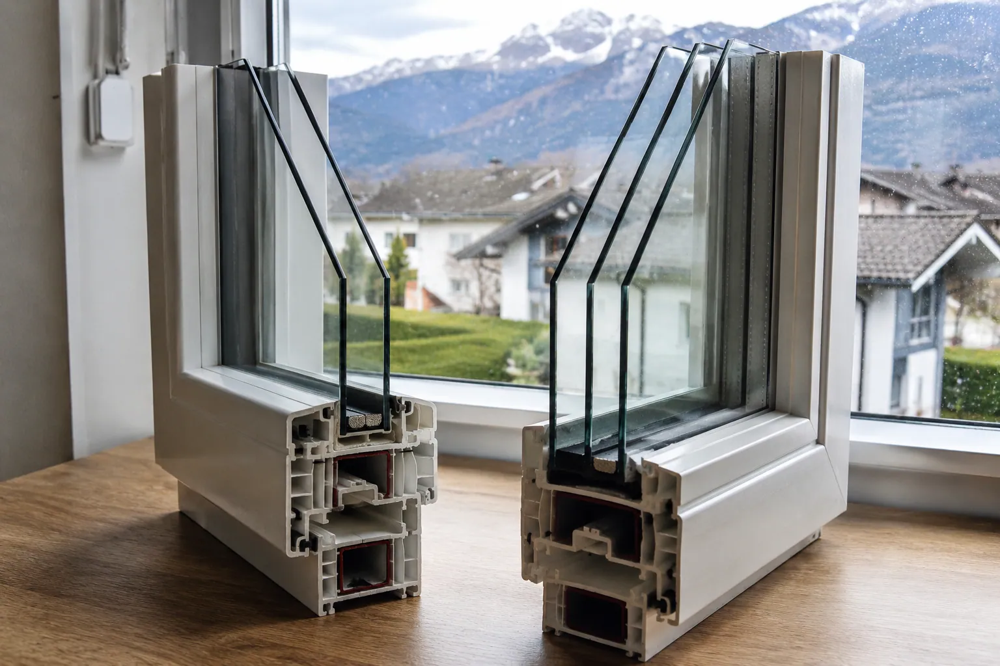

Le triple vitrage n'est utile que dans certains cas : exposition nord, altitude, pièce froide ou projet très isolé. Dans beaucoup de rénovations, un bon double vitrage bien posé suffit.
Le vitrage doit être choisi selon la pièce, l'altitude, le bruit et la luminosité.
Ces valeurs aident à comprendre l'isolation, les apports solaires et la lumière naturelle.
Une bonne fenêtre mal posée perd une grande partie de son intérêt.
Matériau, vitrage, dépose, habillage et garanties doivent être lisibles sur le devis.
Le triple vitrage n’est pas automatiquement le meilleur choix. Il devient intéressant dans des cas précis : façade nord, altitude, pièce très froide ou maison déjà bien isolée. Dans beaucoup de rénovations, un bon double vitrage bien posé donne le meilleur rapport confort, lumière et budget.
Réponse directe
Pour remplacer des fenêtres en Haute-Savoie ou en Savoie, partez d’abord de la pièce concernée. Une chambre au nord à Thônes, La Clusaz ou dans une zone froide ne se traite pas comme une baie de séjour exposée sud près d’Annecy ou Chambéry.
Le triple vitrage isole mieux du froid, mais il peut coûter plus cher, être plus lourd et réduire légèrement la lumière ou les apports solaires. Le bon choix se fait donc ouverture par ouverture.
| Votre situation | Choix souvent pertinent | Pourquoi |
|---|---|---|
| Ancien simple vitrage | Double vitrage performant | Le saut de confort vient déjà du vitrage isolant, de l’étanchéité et de la pose. |
| Pièce froide au nord | Triple vitrage à chiffrer | Le gain thermique peut être utile si la pièce manque d’apports solaires. |
| Grande baie de séjour | Double vitrage bien choisi | Il préserve souvent mieux la lumière, le poids de l’ouvrant et les apports solaires. |
| Bruit de route | Vitrage acoustique | Le triple vitrage standard n’est pas forcément le plus efficace contre le bruit. |
| Maison déjà très isolée | Triple vitrage possible | Il devient cohérent si les murs, combles, ventilation et étanchéité suivent déjà. |
Les chiffres à regarder sur le devis
Ne comparez pas seulement “double” contre “triple”. Une fenêtre se lit avec plusieurs indicateurs. Si ces valeurs ne sont pas indiquées ou expliquées, il est difficile de comparer deux devis sérieusement.
| Indicateur | Ce que cela signifie | À quoi faire attention |
|---|---|---|
| Uw | Performance thermique de la fenêtre complète, vitrage et cadre compris. | Plus il est bas, mieux la fenêtre limite les pertes de chaleur. |
| Ug | Performance thermique du vitrage seul. | Utile, mais moins complet que le Uw. |
| Sw | Facteur solaire : chaleur du soleil qui entre dans la pièce. | Trop bas sur une façade sud peut réduire les apports gratuits en hiver. |
| TLw | Transmission lumineuse. | Important pour éviter une pièce plus sombre après travaux. |
| Acoustique | Composition du vitrage contre le bruit. | Demander un vitrage acoustique si la route, la voie ferrée ou le voisinage sont le vrai sujet. |
Quand le triple vitrage vaut vraiment le coup
Le triple vitrage mérite d’être étudié quand le besoin thermique est clair. Il peut être pertinent pour une chambre froide, une façade nord, une maison en altitude, une pièce peu ensoleillée ou un projet de rénovation globale déjà bien traité sur les murs, les combles et la ventilation.
Il est aussi plus logique dans une maison où l’on cherche un niveau de confort très élevé. Si le logement reste froid parce que les combles, les murs ou les coffres de volets sont faibles, le triple vitrage ne réglera pas tout seul le problème.
Quand le double vitrage reste le meilleur arbitrage
Le double vitrage récent est souvent le meilleur choix en rénovation classique. Il améliore nettement le confort par rapport à un ancien simple vitrage, garde une bonne luminosité et reste plus simple à manier sur de grandes ouvertures.
Sur une baie coulissante, une porte-fenêtre de séjour ou une façade bien exposée, le double vitrage performant peut offrir un meilleur équilibre : isolation correcte, apports solaires utiles, moins de poids et budget plus maîtrisé.
Le cas du bruit : ne vous trompez pas de solution
Beaucoup de particuliers pensent que “plus de vitrage” signifie “moins de bruit”. Ce n’est pas toujours vrai. Pour réduire le bruit, la composition du vitrage compte davantage que le nombre de vitres : épaisseurs différentes, vitrage feuilleté acoustique, joints, coffre de volet, entrées d’air acoustiques et qualité de pose.
Exemple concret : près d’une route passante, un double vitrage acoustique bien posé peut être plus efficace qu’un triple vitrage standard. Si le bruit est votre première gêne, il faut le dire dès le départ pour que le devis réponde au bon problème.
Les erreurs fréquentes avant de signer
- Choisir le triple vitrage partoutcela peut augmenter le budget sans améliorer toutes les pièces.
- Comparer uniquement le Ugle Uw de la fenêtre complète est plus utile pour juger le résultat.
- Oublier la lumièreun vitrage très isolant peut modifier la luminosité, surtout dans une pièce déjà sombre.
- Négliger la ventilationdes fenêtres plus étanches peuvent révéler un manque de renouvellement d’air.
- Oublier la poseune mauvaise étanchéité autour du dormant peut réduire fortement le gain attendu.
Le bon réflexe en Haute-Savoie et Savoie
Demandez un arbitrage par pièce : exposition, altitude, bruit, taille de l’ouverture, usage et budget. Le bon devis doit expliquer pourquoi telle fenêtre reste en double vitrage, pourquoi telle autre mérite un triple vitrage, et comment la pose évite les fuites d’air ou les ponts thermiques.
À retenir : le triple vitrage est une solution, pas une règle. Le meilleur projet est celui qui améliore le confort réel sans payer une performance inutile.
- ADEME - tout savoir sur l’isolationl’ADEME rappelle que la performance d’une fenêtre se lit avec Uw, Sw et TLw, et que le triple vitrage peut réduire les apports solaires et la transmission lumineuse.
- France Rénov’ - remplacer les portes et fenêtresFrance Rénov’ insiste sur la qualité de pose, la ventilation et l’intérêt du double vitrage en remplacement d’un simple vitrage.
- ADEME - isolation phoniquel’ADEME indique que le triple vitrage n’apporte pas automatiquement une meilleure protection acoustique et recommande des solutions adaptées au bruit.
- Service-Public.fr - remplacement de fenêtres, volets ou portescette fiche permet de vérifier si un changement de menuiserie visible doit être déclaré en mairie.